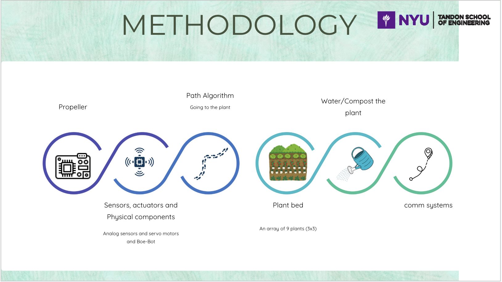
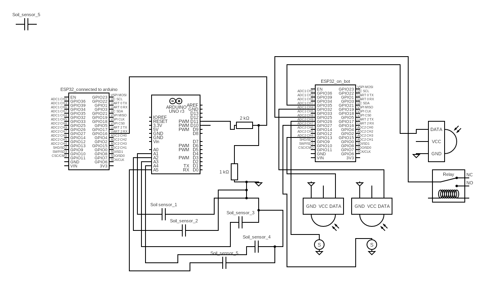
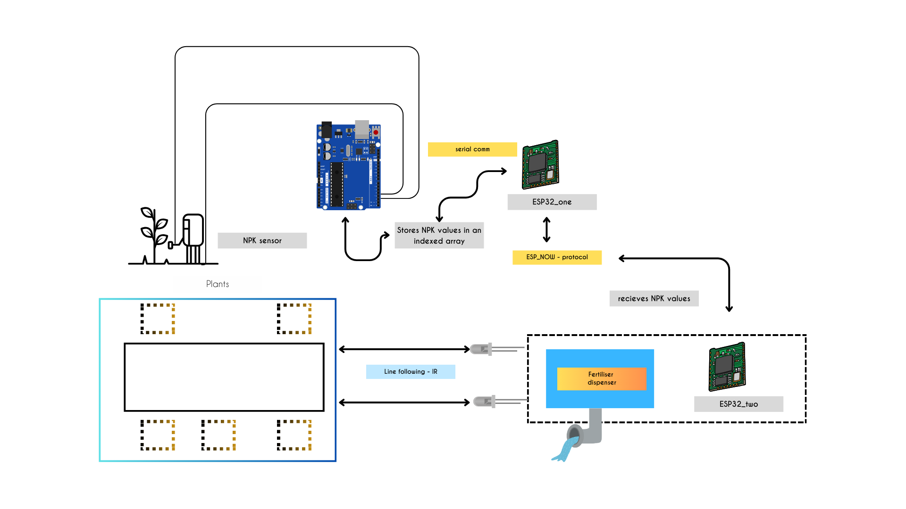
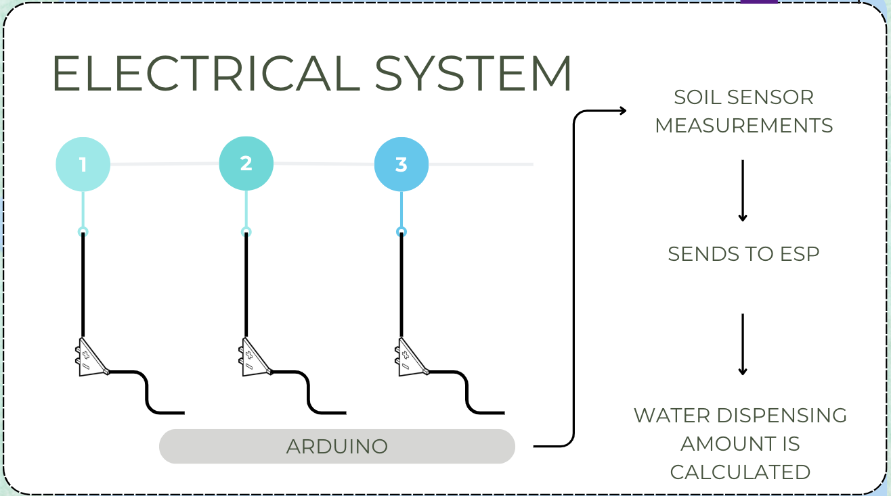
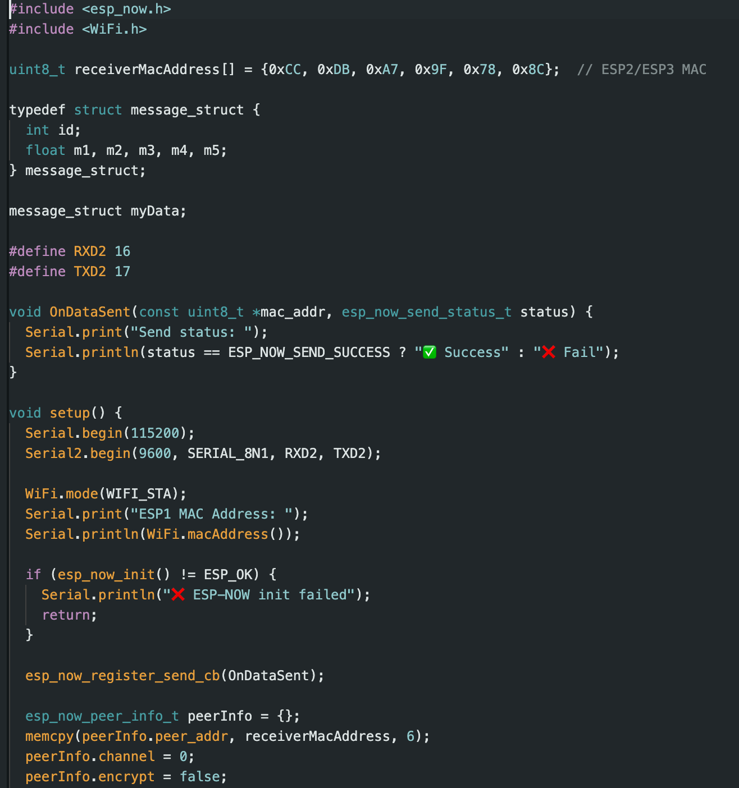
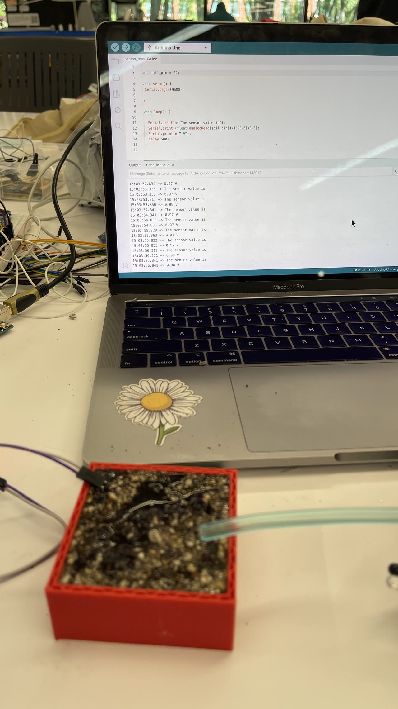
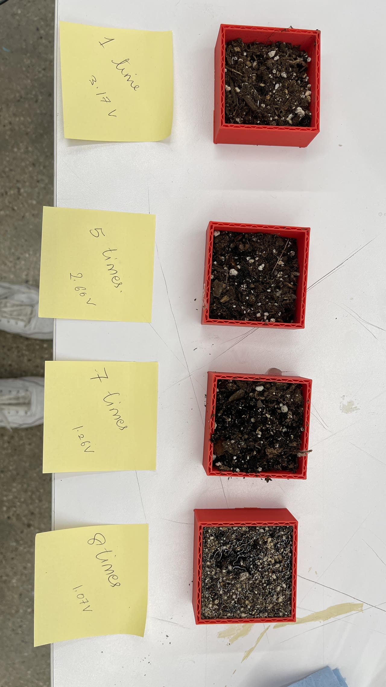
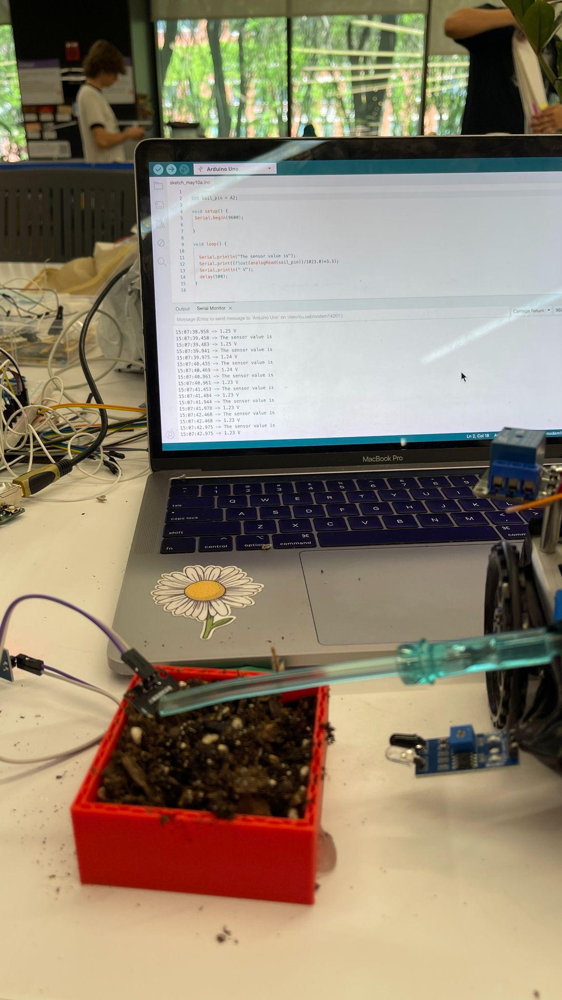
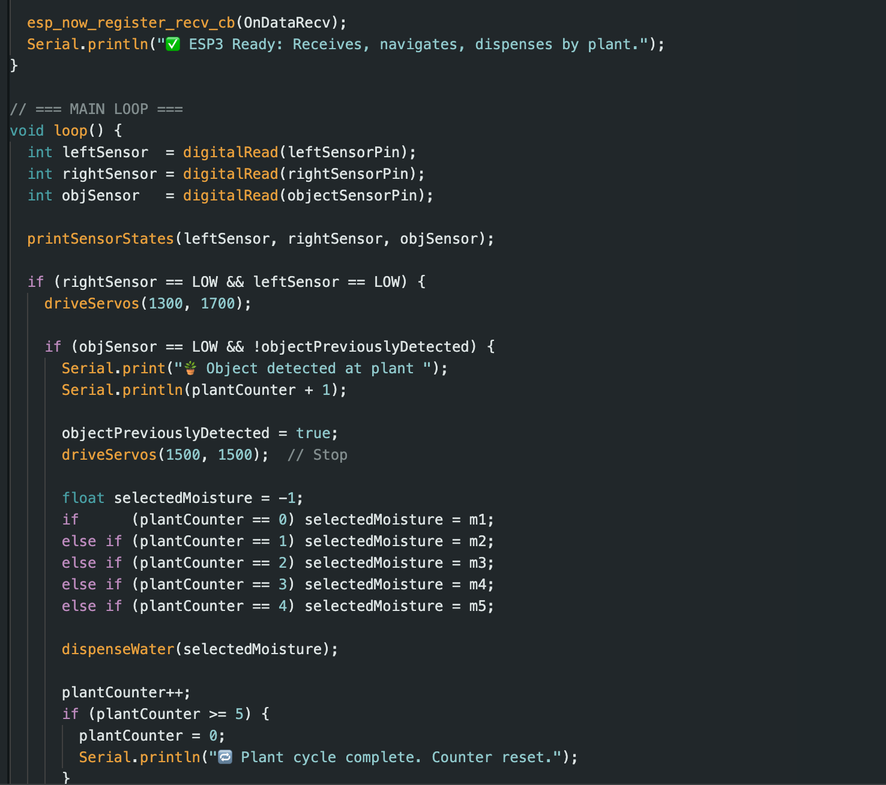

The Raspberry Pi camera bot driving up to a plant to capture an image, which is served over the Flask web server with an AI plant-identification and health description.
Team: Raj Priyadarshi, Devank Thawre, Sagarika (Rika) Rao Valluri
Course: ROB-GY 6103: Advanced Mechatronics | NYU Tandon School of Engineering | May 2025 | Group 15
📄 Download the full project report (PDF) — narrative, circuit schematic, code, and figures.
Demonstration Videos
Overview
Sprout is an autonomous mechatronic system designed to automate the care of greenhouse plants and small gardens. Greenhouse environments require highly customised watering schedules, fertilisation routines, and continuous soil monitoring across different plant species year-round. Sprout addresses this through a multi-bot architecture driven by real-time sensor data, enabling autonomous watering, compost/fertiliser dispensing, and plant health monitoring without human intervention.

Why Three Bots?
A greenhouse plant needs three fundamentally different kinds of care, and each one demands its own actuator, sensor, and payload. Rather than cram all of that onto a single overloaded chassis, Sprout splits the job across three specialised mobile bots that share the same instrumented plant bed and coordinate wirelessly over ESP-NOW:
- 1. Water Bot — carries the water reservoir and a solenoid valve. It reads each plant's capacitive soil-moisture value and dispenses a precisely calibrated amount of water (1–6 doses of 2 ml) based on that plant's soil profile. Watering is the most frequent task, so this bot is optimised purely for line-following and metered dispensing.
- 2. Compost / NPK Bot — carries the compost payload and a servo-driven flap, plus an NPK sensor on a rack-and-pinion arm that lowers into the soil. It measures soil nitrogen, phosphorus, and potassium, and dispenses fertiliser accordingly (twice for nutrient-poor soil, once for healthy soil). This is a chemistry/nutrition task on a completely different timescale from watering, with its own heavy payload — so it can't share the water bot's mechanism.
- 3. Raspberry Pi Camera Bot — carries a Raspberry Pi and camera. It captures plant images on demand and serves them through a Flask web server with an AI plant-identification and health-description feature, letting a greenhouse operator or home gardener check in remotely. This is a compute/vision task needing a full Linux SBC, not the lightweight microcontrollers the other two bots use.
Separating the roles keeps each bot mechanically simple, lets them run their tasks independently and in parallel, and means a fault in one (say, the camera) never takes watering or fertilising offline. The Arduino/ESP32 network ties them together so the whole fleet behaves as one autonomous system.
System Architecture
The system consists of a 3×2 plant matrix embedded with capacitive soil moisture sensors, two autonomous mobile bots, and a Raspberry Pi camera module. The control stack is distributed across three layers:
- Arduino UNO — reads all analog soil moisture sensors and transmits data serially.
- ESP32 modules — handle path logic and inter-device communication via ESP-NOW protocol (peer-to-peer Wi-Fi without a router).
- Raspberry Pi — runs a Flask web server with AI integration for plant identification and health reporting.




Water Bot
Each plant is equipped with a capacitive soil moisture sensor that outputs a voltage proportional to soil water content (dry soil: ~3.3V; saturated soil: ~1.03V). The Arduino reads all five sensors, converts raw ADC values to voltages using values[i] = (float(raw) / 1023.0) * 3.3, and sends this data to ESP-1 via serial communication. ESP-1 relays the data over ESP-NOW to ESP-2 on the water bot.
The water bot follows an IR line-following track and uses an IR proximity sensor to detect and stop at each plant. Based on the received moisture voltage, it determines how many times to actuate a solenoid valve (2 ml per dispense), dispensing between 1 and 6 times depending on dryness. Two soil profiles were characterised through gravimetric and volumetric analysis to calibrate the watering logic per soil type.

(raw/1023)·3.3.


NPK (Compost) Bot
A second autonomous bot carries an NPK sensor (RS-485 Modbus RTU protocol, connected to an ESP32 via RE/DE-controlled RS-485 converter) to measure nitrogen, phosphorus, and potassium in the soil. The bot navigates the plant grid autonomously using IR line-following and IR object detection. Upon reaching each plant, a servo-controlled arm lowers the NPK sensor into the soil, takes a reading, and transmits it back to the Arduino via ESP-NOW through ESP-3 → ESP-1 → Arduino. Based on NPK readings, the servo-actuated compost flap dispenses fertiliser — twice for nutrient-poor soil, once for healthier soil — demonstrating closed-loop sensor-actuator control.
Camera & AI Module
A third bot equipped with a Raspberry Pi camera captures images of plants on demand. These images are served through a Flask web server, allowing plant owners to remotely check in on plant health. An AI description feature provides users with information about the plant species and growing conditions, useful both for commercial greenhouse operators and home garden enthusiasts.
Key Results
- Soil moisture sensor voltages mapped to water dispense counts: 8× at 1.03V, 7× at 1.26V, 6× at 1.70V, 5× at 2.66V.
- NPK readings for two soil profiles: Profile 1 (N: 150, P: 155, K: 145 mg/ml) and Profile 2 (N: 45, P: 70, K: 60 mg/ml).
- Autonomous multi-bot coordination demonstrated on a physical track with no manual intervention.
- Project cost: ~$136.72 (class kit components); full individual component cost: ~$387.
Lessons Learned
- Gained hands-on experience with UART, serial, and Wi-Fi (ESP-NOW) communication protocols.
- Implemented RS-485 Modbus RTU for NPK sensor integration with ESP32.
- Developed soil profiles using gravimetric water content analysis to calibrate moisture-to-watering logic.
- Used Flask to bridge embedded hardware with a web interface for real-time remote control.
- Engineered robust multi-bot path planning and plant-counter synchronisation across independent systems.